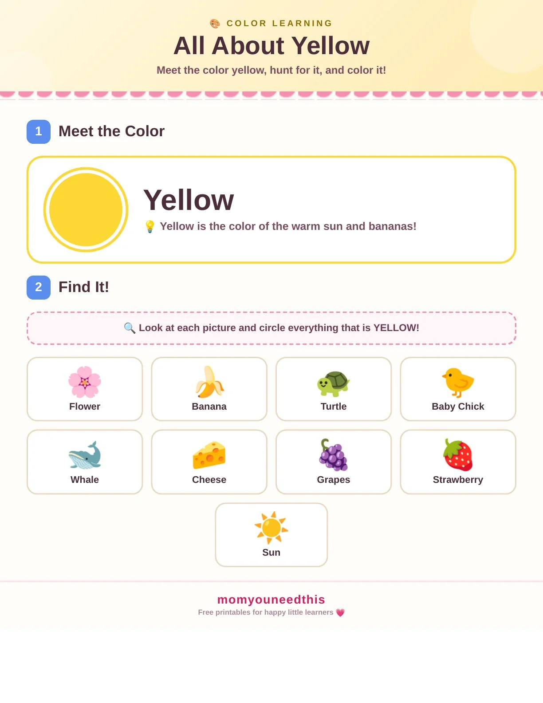

Yellow Color Worksheets For Kids Practice Identifying And Naming The Color Yellow
Bright as sunshine — these yellow worksheets make learning the color yellow cheerful and memorable.
Quick Answer
This free printable yellow color worksheet helps toddlers and preschoolers learn to identify and name the color yellow. Kids find, trace, and color yellow objects like the sun and bananas. Yellow is a primary color — one of the three that cannot be mixed — and the brightest color in the box: the color of sunshine, school buses, and warning signs, precisely because eyes notice it first. Download and print at home with no signup needed — sunshine-bright learning for ages 2 to 4.
At a Glance
- Ages: Toddlers and preschoolers
- Activity: Finding, tracing and coloring yellow objects
- Skills: Yellow color recognition
- Format: Printable worksheets (PDF)
- Cost: Free, no signup
🟡 Learn The Color Yellow
Yellow is the attention color. It is the first color the eye notices, which is why school buses, caution signs, and tennis balls wear it — and why it is such a satisfying color to teach: the world keeps pointing at it. This worksheet collects that advantage into yellow-object finding, tracing the word yellow, and coloring activities, all in sunshine's own color.
Yellow has one quirk worth knowing as you work: it is the palest strong color, so a yellow crayon on white paper is genuinely hard to see. That is not your child failing — it is physics. The worksheet's bold outlines exist partly for this reason, and coloring yellow sections fully (pressing a little harder) is a small, real technique to teach here.

🖨️ Download Your Free Yellow Color Printable
Print it out, grab the crayons, and you're ready — no signup needed.
⬇️ Download Free Printable 🖨️ Print(opens in new tab)🎁 Free printable for toddlers & preschoolers
🔍 Find Yellow At Breakfast
Spot yellow foods at breakfast — bananas, eggs, butter. Everyday moments like meals are perfect low-pressure color practice, and breakfast is secretly a yellow festival: cornflakes, pineapple, cheese, lemonade by lunch.
Take the hunt to the street for yellow's other job: school buses, taxis in some cities, road signs, and construction vests. Yellow is the color adults use to say “look here!” — telling your child that turns every sighting into evidence: the world agrees yellow is the most noticeable color, and now they know its name.
💡 Why Learn Colors One At A Time?
Yellow completes the three primary colors alongside red and blue. Once children know all three, they are ready to discover how colors mix — every secondary color (green, orange, purple) has a primary parent, and yellow is in two of the three recipes.
Learning yellow on its own also protects it from its neighbor: orange. Side by side they are easy to confuse at a glance, but a page of pure yellow — sun, bananas, lemons — draws the border clearly, and the orange page later can lean on yellow as its known landmark.
📚 Keep Exploring
Discover more free color activities, printables, and learning ideas created for busy parents.
🎁 Back to Color Identification🟡 All About Yellow — The Brightest Color There Is
Yellow is a primary color — it cannot be made by mixing — and it is the lightest, brightest color in the spectrum, the one human eyes are most sensitive to. That is not a metaphor: safety yellow exists because the eye catches it fastest. When your child learns yellow, they are learning the color the world uses for “pay attention.”
Its team is delicious and cheerful: bananas, lemons, corn, egg yolks, butter, cheese, pineapple, sunflowers, daffodils, baby chicks, and the sun itself (drawn yellow by every child, though it is really white — the drawing convention is stronger than the astronomy, and that is fine).
One practical artist's tip to pass on: yellow shows every wobble and gap more than dark colors do, so yellow areas look best colored in one direction with full coverage. Teach the “color it like you're painting a wall” stroke on this page and your child's yellow sun will glow instead of streak — a tiny technique with an outsized effect on pride.
❓ Frequently Asked Questions
What is on the yellow color worksheet?
Yellow-object finding, tracing the word yellow, and coloring — all centered on learning the color yellow. Kids practice with the sun, bananas, lemons, and the other breakfast-table yellows. Kids practice with the sun, bananas, lemons, and the other breakfast-table yellows.
Are these color worksheets really free?
Yes — every printable on MomYouNeedThis is 100% free to download and print. No signup, no payment, just tap the download button. Yellow completes the primary-color set with the red and blue worksheets — all three together unlock the color-mixing pages. Yellow completes the primary-color set with the red and blue worksheets — all three together unlock the color-mixing pages.
Which colors should we learn first?
They can point to yellow objects when asked and name the color yellow without prompting — and they can separate it from orange, its closest neighbor and the classic mix-up. A child who spots yellow's jobs in the wild (buses, signs) and comments on them has fully installed the color.
💜 More Color Fun You'll Love
Keep the color learning going with these related activities.
🔴 Red Color 🔵 Blue Color 🟠 Orange Color